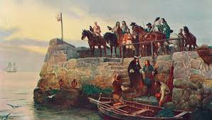

Une expérience unique !
L'attraction la plus attendue du Futuroscope est enfin arrivée ! Une montagne russe haute en sensations, mais également en réalité virtuelle ! En effet, les visiteurs pourront porter un casque VR qui leur permettra de vivreune expérience unique et personnalisée. Que vous soyez un aventurier aguerri ou un débutantdans les montagnes russes, cette attraction est faite pour vous (veillez tout de même à avoir le cœur bien accroché 😉).Vous pourrez choisir votre propre parcours en réalité virtuelle et découvrir des mondesincroyables tout en ressentant les sensations fortes de la montagne russe. Les décors de l'attraction seront à couper le souffle, offrant une immersion totale dansdes univers fantastiques. Vous ne pourrez pas résister à l'appel de cette attractionsensationnelle ! Venez vivre une expérience inoubliable au Futuroscope et relevez ledéfi de cette montagne russe en réalité virtuelle.

Une avancée technologique hors-norme !
L'attraction de montagnes russes en réalité virtuelle représente une avancée technique majeure dans l'industrie des parcs d'attractions. Grâce à la technologie de pointe utilisée pour créer cette attraction, les visiteurs pourront profiter d'une expérience de montagnes russes qui intègre parfaitement la réalité virtuelle. Les casques VR offriront une immersion totale dans des univers fantastiques, créant ainsi des sensations réalistes et intenses pour les visiteurs. Les décors de l'attraction seront à couper le souffle, offrant une expérience visuelle et auditive incroyable. De plus, la technologie utilisée pour synchroniser les mouvements de la montagne russe avec les images en réalité virtuelle est une prouesse technique impressionnante. Cette attraction offrira ainsi une expérience unique et inoubliable pour les visiteurs qui cherchent à découvrir de nouvelles sensations fortes.